ILIFE H90 Pro
Пилосос, який не треба витрушувати
Прибрали, поставили на базу, і вона сама висмоктує з контейнера пил і шерсть у закритий мішок на 2 л. Займає це 15-19 секунд. Руки чисті, хмари пилу над смітником немає.
5 415 грн463,59 zł, доставка безкоштовна
4,9 з 5 за 124 оцінками покупців на AliExpress
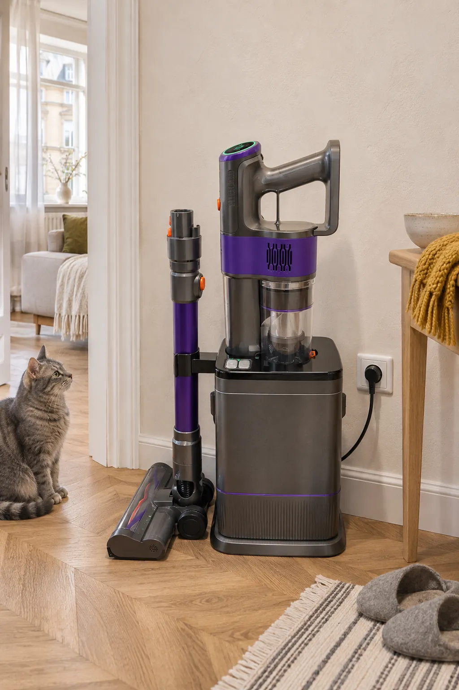
Поставили на базу. Далі вона сама.
Головне в H90 Pro не пилосос, а база. Вона заряджає його, тримає трубу зі щіткою і після кожного прибирання забирає з контейнера все, що він зібрав.
- Пропилососили й поставили пилосос на базу. Поки він стоїть, ще й заряджається.
- База вмикається сама. У режимі AUTO вона стартує щоразу, коли пилосос стає на місце. Якщо хочете спорожнювати рідше, є кнопка ручного запуску.
- 15-19 секунд, і контейнер порожній. Потік повітря вниз витягує пил і шерсть з контейнера та фільтра в паперовий мішок на 2 л.
- Мішок повний? Загориться індикатор. Мішок виймають закритим і викидають разом з усім пилом. У комплекті їх п'ять.
У контейнері пил і шерсть після прибирання.
Схема умовна, анімацію прискорено в 4 рази. Справжня база працює 15-19 секунд і гучно, приблизно як звичайний провідний пилосос.
Так база виглядає в покупців
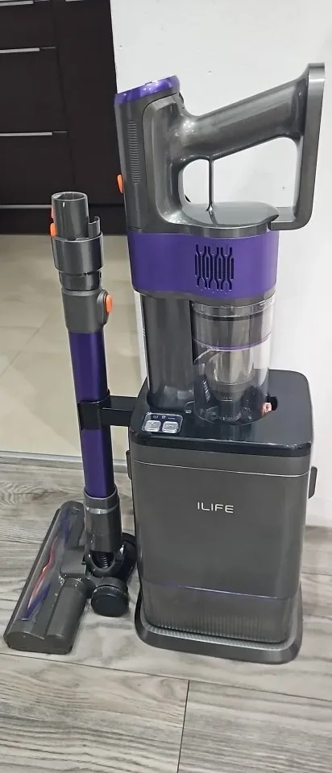
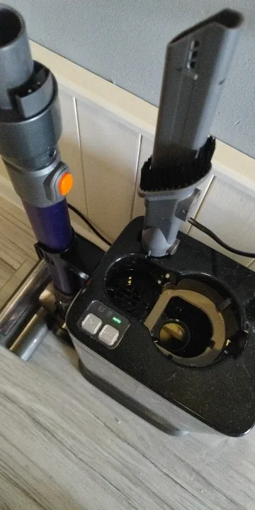
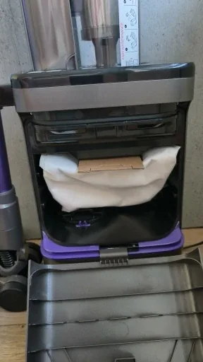
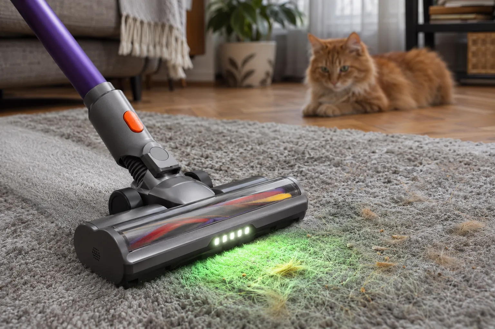
Для квартири, де линяє кіт
У режимі Turbo пилосос тягне з силою 35 кПа. Ворс на валику укладений буквою V і зганяє шерсть до центру щітки, звідки її одразу забирає потік. Тому на валик вона накручується менше, ніж на звичайну щітку.
А з контейнера шерсть потім висмоктує база. Виколупувати пальцями клубок з фільтра не доведеться.
Якщо валик таки заклинить, щітка зупиниться, підсвітка згасне, а на дисплеї заблимає індикатор.
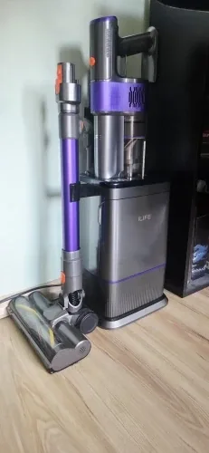
Автоспорожнення чудове для тих, у кого вдома тварини: база витягує з пилососа всю шерсть.
Зелене світло показує пил, якого не видно
Спереду на щітці зелена підсвітка. Вона світить широким віялом на 120° і приблизно на 60 см уперед. У цьому світлі на підлозі проступають пил, волосся і крихти, особливо під диваном і ліжком.
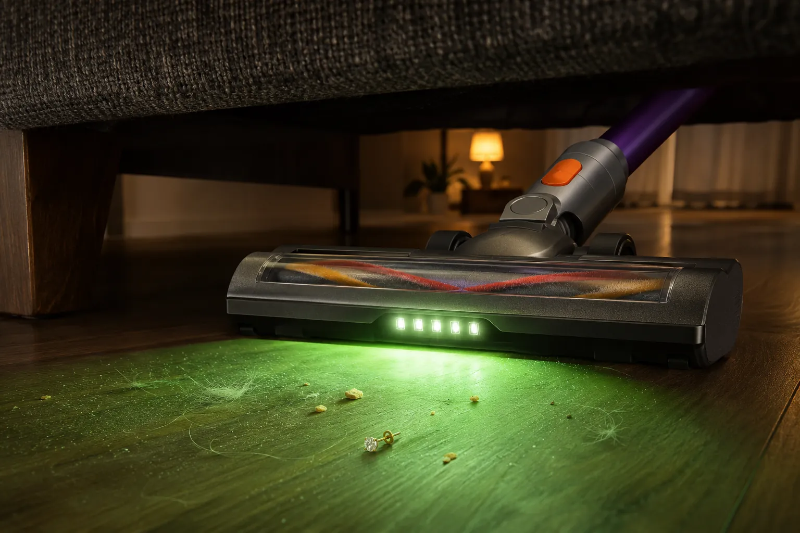
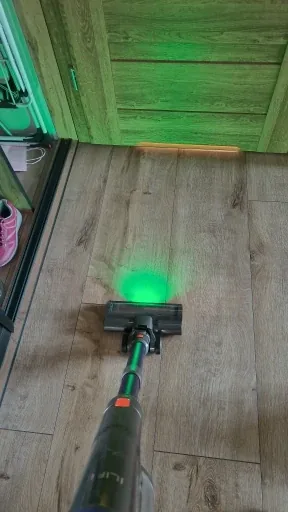
Продавець пише, що пил стає помітнішим у 16 разів. Простіше кажучи, одразу видно, де пройтися ще раз, а де вже чисто.
Підсвітка світить ідеально. База спорожнює без проблем, батарея тримає добре.
Зняли трубу, і це вже ручний пилосос
Без труби в руці лишається тільки блок з контейнером. Продавець указує вагу пилососа 1,37 кг, тож і під стелею з ним рука не втомлюється.
Насадка 2-в-1, вузька щілинна зі щіточкою, дістає крихти зі швів дивана, сидінь в машині, з підвіконь і полиць. Металева труба розсувається під зріст, зручно і дорослим, і дітям.
Акумулятор на 2200 мА·год знімається, його можна замінити, коли за роки він почне тримати менше.
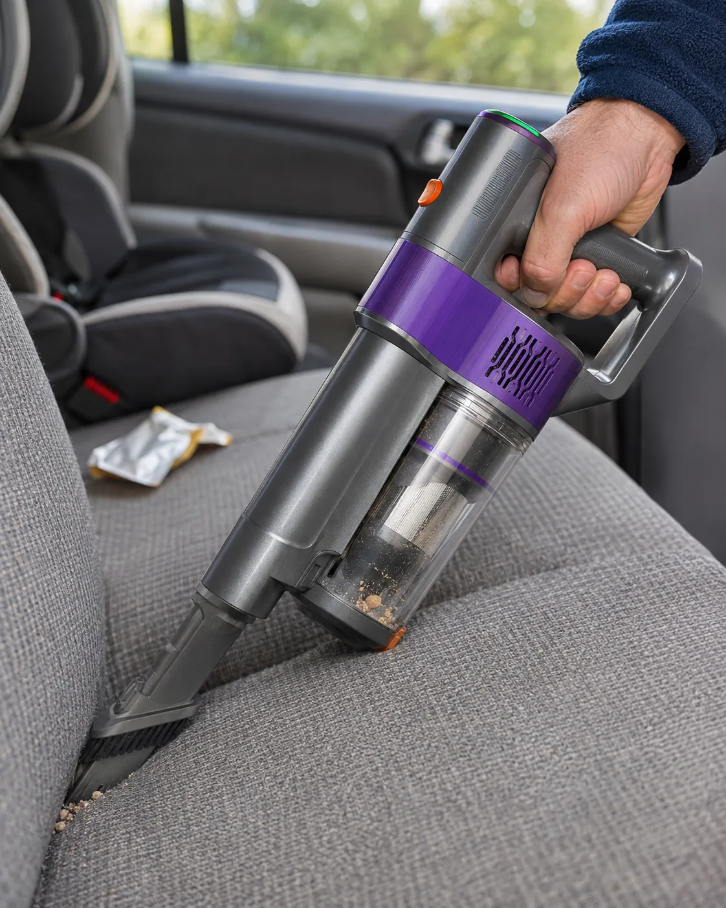
Три рівні потужності
Чим слабше тягне, тим довше працює. Оберіть рівень, щоб побачити, на скільки вистачає батареї.
10 кПа
до 45 хвилин від батареї
Щоденне прибирання ламінату, плитки й паркету. Найтихіший рівень і найдовша робота.
Кнопкою на ручці перемикаються два основні режими, Eco і Standard, окрема кнопка вмикає Turbo на 15 секунд. Сила всмоктування й час роботи від продавця, 15 секунд Turbo і 4-5 годин повної зарядки з інструкції.
Характеристики
Ми звірили сторінку товару з інструкцією H90 Pro. Біля кожного рядка написано, звідки цифра.
- Всмоктування
- до 35 кПа в Turbo, також 10 і 20 кПапродавець
- Час роботи
- до 45 хв на 10 кПа, близько 20 хв на 20 кПапродавець
- Акумулятор
- Li-ion, 2200 мА·год, знімнийінструкція
- Зарядка
- 4-5 годин, на базіінструкція
- Спорожнення базою
- 15-19 с, вручну або AUTOінструкція
- Всмоктування бази
- 20 кПапродавець
- Мішок у базі
- 2 л, закритий, 5 штук у комплектіінструкція і продавець
- Контейнер пилососа
- 0,5 лпродавець
- Фільтрація
- 6 ступенів, затримує до 99,97% пилупродавець
- Підсвітка
- зелена, 120°, до 60 см упередпродавець
- Вага пилососа
- 1,37 кгпродавець
- Вага всього комплекту
- 5,0 кг, у коробці 6,2 кгінструкція
- Висота на базі
- 69 смпродавець
- Потужність
- 350 Втпродавець
- Живлення
- 220-240 В, європейська вилкаінструкція
- Прибирання
- тільки сухеінструкція
- Гарантія
- 2 рокипродавець
Що пишуть покупці
124 оцінки на AliExpress, з них 114 на п'ять зірок. Найбільше відгуків з Польщі, далі Угорщина, Іспанія та Італія. Цитуємо в перекладі.
4,9
Відмінний пилосос, дуже добре зроблений, тягне сильно, а база виглядає класно й працює ідеально. Сам процес спорожнення в мішок трохи довгий і гучний. Але за таку ціну це знахідка.
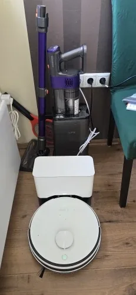
Напрочуд тихий, навіть у турбо звук приємний. А база, коли висмоктує пил, гуде десь як старий провідний пилосос!
Станція маленька, її легко сховати. У мене багато собачої й котячої шерсті, а фільтр не забивається, як у інших дешевих пилососів. На 56 м² батарея ще жодного разу не сіла до кінця. Єдине: мішки дорогі, вибору поки немає, а 2 л у мене заповнюються досить швидко.
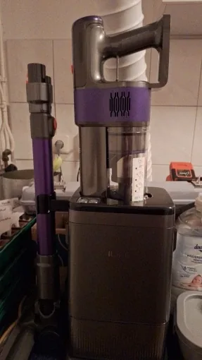
Маю два провідні пилососи, ними не завжди зручно. Тепер є цей, і дивуюся, як легко прибирати бездротовим. Подобається, що він очищується, щойно ставиш його назад на зарядку.
Щітка збирає добре, потужності вистачає, станція спорожнює дуже добре. Не подобаються лише пластикові коліщата щітки: на твердій підлозі її трохи заносить убік.
Швидка доставка, чудовий пилосос. Прибирає добре і збирає все. Станція для очищення справжня знахідка. За таку ціну це дуже класна техніка.
Що варто знати до покупки
Мінуси з інструкції та з відгуків. Краще прочитати їх тут, ніж дізнатися після доставки.
Мішки фірмові й недешеві
База без мішка не працює. У комплекті п'ять мішків по 2 л, продавець обіцяє до 60 днів на один. Власники котів і собак пишуть, що заповнюються вони швидше, а окремо мішки поки важко знайти: у питаннях на сторінці товару згадують близько 100 zł за три штуки.
Спорожнення гучне
15-19 секунд база гуде на повну, як провідний пилосос. Якщо прибираєте пізно ввечері, перемкніть базу з AUTO на ручний запуск і спорожніть контейнер уранці.
Turbo тримається 15 секунд
Потім пилосос сам повертається в економний режим. На килимі кнопку доводиться натискати кілька разів, і покупцям, які звикли до постійного турбо, це не подобається.
Тільки сухе прибирання
Розлитий чай, мокрий бруд, попіл, будівельне сміття, скло і цвяхи збирати не можна, це прямо заборонено в інструкції. Для ремонту краще будівельний пилосос.
Фільтр не можна мити
За інструкцією холодною водою промивають лише металеве сито. Сам фільтр після води гірше затримує пил, його міняють. Чи продаються окремо фільтри й акумулятори, покупці уточнюють у продавця.
Бюджетний пластик
Коліщата щітки пластикові, на плитці й ламінаті її трохи заносить. Один покупець називає пластик хлипким. З 124 оцінок одна трійка з поверненням: покупцеві здалося, що батарея тримає помітно менше заявленого.
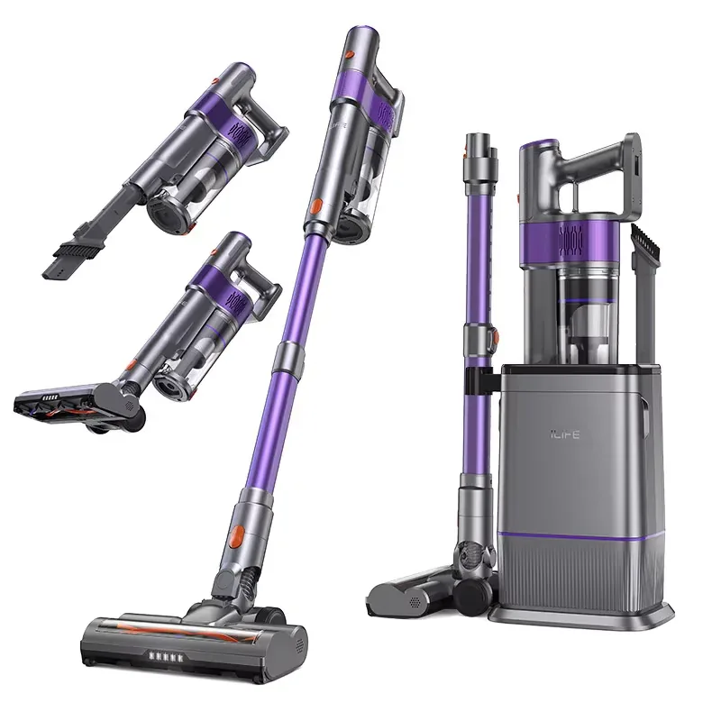
Що в коробці
Список з інструкції. Усе, щоб почати прибирати в день доставки, після зарядки.
- Ручний блок з мотором і контейнером
- База самоочищення
- Телескопічна металева труба
- Моторизована щітка для підлоги з підсвіткою
- Насадка 2-в-1, щілинна зі щіточкою
- Акумулятор
- Мішки для пилу, 5 шт.
- Фільтр
- Інструмент для чищення валика
- Губка
- Інструкція
Ціна
ILIFE H90 Pro з базою і п'ятьма мішками
5 415 грн
463,59 zł за курсом AliExpress
- До знижки
- 558,57 zł, або 6 547 грн. Це найнижча ціна за 30 днів перед знижкою
- Доставка
- безкоштовно, 3-6 днів зі складу AliExpress у Польщі
- Обмеження
- за цією ціною одна штука на покупця
- Продавець
- ILIFEPL Store, 98,7% позитивних відгуків
Ціну перевірено 9 листопада 2026 року. На AliExpress вона змінюється, актуальну побачите на сторінці товару.
Питання
Чи можна пилососити без бази?
Так. Це звичайний бездротовий пилосос, база потрібна для зарядки і спорожнення. Контейнер на 0,5 л знімається, за потреби його можна витрусити й руками.
Скільки триває зарядка?
Повна зарядка займає 4-5 годин, пилосос заряджається, поки стоїть на базі. Під час зарядки індикатор батареї блимає зеленим, коли батарея повна, перестає блимати. Перед першим прибиранням інструкція радить зарядити його повністю.
Чи працює база без мішка?
Ні. Без мішка база не вмикається, так написано в інструкції. У комплекті п'ять мішків по 2 л.
Чи можна збирати воду або будівельне сміття?
Ні. H90 Pro тільки для сухого прибирання. Інструкція забороняє збирати рідини, попіл, будівельне сміття, скло і цвяхи.
Чи можна мити фільтр?
Металеве сито можна промити холодною водою і добре висушити. Сам фільтр мити не можна, після води він гірше затримує пил. Коли тяга помітно слабшає, фільтр замінюють.
Яка вилка і напруга?
Європейська вилка, підходить до звичайних українських розеток. База працює від мережі 220-240 В.
Прибрали. Поставили. Забули.
ILIFE H90 Pro з базою і п'ятьма мішками за 5 415 грн. Доставка безкоштовна.
Купити на AliExpress